1.3
Bursdag i Antarktis
Bursdag i Antarktis er en interaktiv animasjon som forteller historien om en liten katt som har gått seg bort på bursdagen sin. Heldigvis treffer han noen hyggelige pingviner han kan feire sammen med.

Vi lager en katt som kan gå rundt i Antarktis på egen hånd.
Vi skal etterhvert fortelle en ganske spennende historie om katten som møter dansende pingviner på bursdagen sin. Men som alltid er det greit å begynne med noe ganske enkelt, for deretter å bygge videre på det.
Felix, og sett rotasjonsmåten hans til  .
. nede til venstre på skjermen. Velg
nede til venstre på skjermen. Velg Holiday/winter.Holiday/winter-lights.Vi begynner med et skript på scenen, som passer på at vi viser winter-bakgrunnen når animasjonen starter. Gå til Skript-fanen og legg til
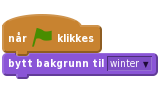
Da kan vi få katten til å flytte på seg. Klikk på Felix og gi ham dette skriptet:
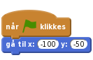
Her kan du eksperimentere litt med tallene for x og y til du finner noe som du synes ser bra ut.
La oss nå få Felix til å bevege seg over skjermen. Vi skifter mellom de to draktene hans for at det skal se ut som om han går. Utvid skriptet til Felix på denne måten:
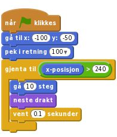
Tallet 100 i pek i retning-klossen gjør at Felix går litt nedover mens han går over skjermen. Prøv gjerne med noen andre tall for å se effekten av dem.
Klikk på det grønne flagget.
Antarktis er navnet på området der Sydpolen ligger. Selv om det ikke bor hverken mennesker eller katter fast på Antarktis finnes det veldig mange pingviner der.
Vi vil nå få bakgrunnen til å endre seg når katten kommer til enden av skjermen. Vi begynner med noe enkelt, men som dessverre ikke fungerer så veldig bra.
Lag et nytt skript på Scenen.
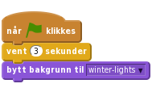
Legg også til en kloss som flytter Felix inn til veien etter at bakgrunnen er byttet.
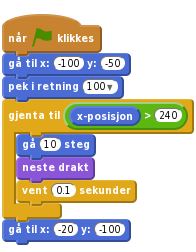
Klikk på det grønne flagget.
vent 3 sekunder slik at det ser bedre ut?Vi skal nå begynne å bruke meldinger for å få ting til å skje på likt.
Vi har sett at vi kan klare å få ting til å skje samtidig ved å bruke vent-klosser. Men det er vanskelig å finne ut akkurat hvor lenge vi bør vente, og det er kjedelig å måtte endre på denne tiden om vi forandrer for eksempel hvor fort Felix går.
Vi skal derfor i stedet bruke meldinger. Slike meldinger er noe figurene kan sende til hverandre eller til scenen uten at de er synlige for oss som ser på.
La katten sende en melding når han når kanten av skjermen.
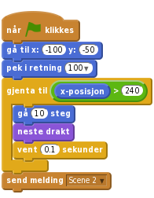
Vi kan nå slette det gamle skriptet på scenen som byttet bakgrunn til winter-lights, og heller bruke dette:
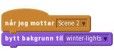
Felix kan også motta meldinger han sender selv. Vi kan bruke dette til å flytte ham inn på veien samtidig som vi bytter bakgrunn. Legg til følgende som et nytt skript på Felix:
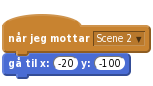
Klikk på det grønne flagget.
Før Felix vandrer i vei synes vi at han burde introdusere seg selv!
Som alle høflige katter introduserer Felix seg når han treffer nye mennesker.
Start et nytt skript på Felix:
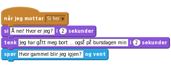
For å teste hvordan skriptet virker kan du bare klikke på for eksempel klossen når jeg mottar Si hei. Snakker og tenker Felix?
Når du svarer på Felix spørsmål blir svaret ditt tatt vare på i en variabel som heter svar. Vi vil lage en ny variabel med et bedre navn som kan ta vare på dette svaret. Lag en ny variabel som heter alder. La denne variabelen gjelde for alle figurer, og fjern avhuking slik at variabelen ikke vises.
Legg til en kloss nederst i skriptet:
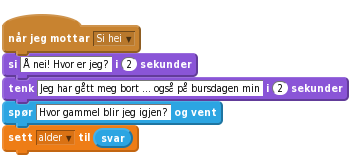
Nå vil vi at Felix skal si og gjøre alt dette før han vandrer gjennom skogen. Legg til en send melding-kloss i det første skriptet til Felix:
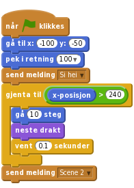
Klikk på det grønne flagget.
Vi vil at Felix snakker ferdig før han begynner å gå. Dette er heldigvis ganske enkelt. Hvis vi bytter ut send melding-klossen med en send melding og vent-kloss, vil ikke Felix begynne å gå før han er ferdig å snakke (og vi har svart på spørsmålet hans):
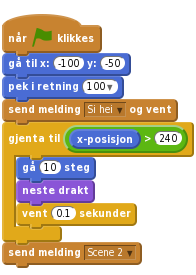
Klikk på det grønne flagget.
Da er vi klare til å hjelpe Felix med å finne veien opp til de to husene.
Vi skal nå la Felix gå langs veien opp til husene. For at det skal se ut som om han går oppover mot husene vil vi la han bli mindre og mindre mens han går.
Vi skal nå fortsette på skriptet til Felix som begynner med at han mottar meldingen Scene 2. Legg til en liten si-kloss først:
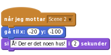
Nå skal vi la Felix følge veien oppover. Prøv først med følgende skript:
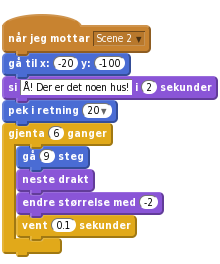
Følger Felix veien oppover? Blir han mindre mens han går? Husk at om du vil teste dette skriptet uten å se hele animasjonen kan du klikke på når jeg mottar Scene 2-klossen. Du bør også klikke på sett størrelse til 100%-klossen i Utseende-kategorien innimellom, slik at Felix får tilbake sin vanlige størrelse.
Nå vil vi at Felix skal forandre retning slik at han følger veien. Et triks er at vi kan gange retningen hans med -1. Da blir det som om han snur seg rundt. Siden vi vil gjøre dette fire ganger lager vi også en ny gjenta-kloss:
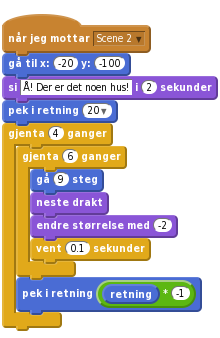
Klikk på det grønne flagget.
Hvis du ser litt nærmere på veien ser du at den flater ut. Dette kan vi etterligne for Felix med å gange med et tall som er litt forskjellig fra -1 i retningen.
Endre -1 i pek i retning-klossen til -1.5.
For å skjønne bedre hva som skjer kan du klikke på i på Felix og følge med på retning mens skriptet kjører.
Når Felix kommer fram til huset kan vi skjule ham, og skifte til en ny scene.
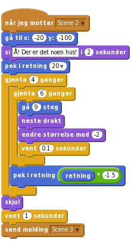
For den scenen trenger vi en ny bakgrunn. Klikk og legg til bakgrunnen Holiday/gingerbread. Gi scenen dette skriptet:
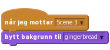
I det vi skifter til den nye scenen vil vi også at Felix skal få tilbake sin vanlige størrelse. Klikk på Felix og start et nytt skript:
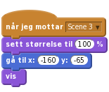
Klikk på det grønne flagget.
Felix skal nå møte to pingviner som bor inne i pepperkakehuset. De skal komme ut av huset og snakke litt med Felix
Lag to nye figurer ved å trykke på  . Velg
. Velg Dyr/Penguin1 og Dyr/Penguin2. Gi pingvinene navn du liker, vi har valgt å kalle dem Pingu og Pappa Pingu.
For at pingvinene først skal dukke opp i Scene 3, må vi skjule dem når animasjonen starter. Legg til følgende skript på begge figurene:

Først skal Felix spørre om det er noen hjemme, og så skal han sende en melding hvor han ber pingvinene om å komme ut. Endre Felix sitt skript ved å legge til to klosser på slutten:
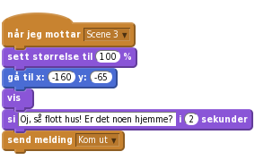
Pingu skal nå komme ut av døra og gå litt til siden. Sjekk med musepekeren hva x og y-posisjonen til døren er. Legg til følgende skript på Pingu:
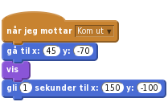
Pappa Pingu kommer ut litt senere, og stiller Felix et spørsmål. Legg til følgende script på Pappa Pingu:
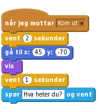
Klikk på det grønne flagget.
Pingvinene blir glade for å treffe Felix, og etter en liten samtale begynner den ene pingvinen å danse siden det er Felix sin bursdag.
Få Pappa Pingu til å sende en melding etter at han har spurt hva Felix heter. Kall for eksempel meldingen Navn1
Legg til følgende skript på Pingu
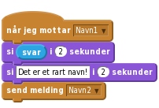
Legg til følgende skript på Felix for å få ham til å svare og si at han har bursdag:
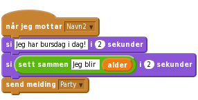
Legg merke til sett sammen-klossen. Denne kan vi bruke for å sette sammen tekst. Pass på at du skriver et mellomrom etter ordet blir!
Nå skal vi få Pingu til å danse! Lag to nye drakter for Pingu ved å importere Dyr/Penguin1 to ganger. Roter de to nye draktene litt i forhold til hverandre ved å klikke på draktene i tegnevinduet og rotere rundt med musen (du må kanskje bytte til vektorgrafikk).

Legg til en lyd du liker under Lyder, og lag følgende skript på Pingu (vi har brukt lyden human beatbox1):
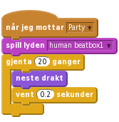
Klikk på det grønne flagget.
Nå har vi begynt på historien om katten som feirer bursdagen sin i Antarktis. Men kanskje du kan fortelle mer om hva som skjer videre?
Eller om du heller vil vise fram historien din til familie og venner kan du velge Legg ut på toppen av skjermen.
Kan du fortsette på historien? Hva skjer videre?
Kanskje du kan introdusere flere figurer, eller flere bakgrunner? For eksempel kan det hende at pingvinene inviterer katten med seg inn i huset? Eller kanskje de sammen går videre på leting etter en båt som katten kan bruke for å komme seg hjem til Norge?
Husk at du kan også blande animasjonen med et lite spill, og så gå tilbake til mer animasjon! Det er helt opp til deg!